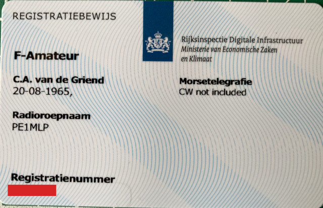

License
Today I got my license card in the mail. I can't remember it precisely, but I guess I passed my C-exam in 1982 and got the call sign PE1MLP.
In those days there where 4 different levels:
- D: novice license, only FM from 145 MHz to 146 MHz. Call signs started with PD
- C: technical license, all modes on all VHF and UHF band. Call signs started with PE
- B: "slow" CW license, some HF and all modes on all VHF and UHF band. Call signs started with PB
- A: full license with CW, all modes on all bands. Call signs started with PA
I don't know when the change was, but there are no CW exams in the Netherlands anymore so my license was upgraded to a full license. I have been of the air since 1995 and activated y license less than 2 weeks ago. My original call sign was not in use and I could get it back.
Dreaming of a shack
I'm thinking about building a new shack. I have the basic equipment.
Have
- Receiver: RTL-SDR v4
- Handheld: Icom ic-32e 2m/70cm FM (1988)
- Base: Icom ic-251e 2m CW/FM/SSB (1982)
- Enough Linux PC's for a small army
Must have
- Outside 2m antenna (Ground plane?) for 2m base
- Outside 2m/70cm antenna (J-pole?) for 2m/70cm handheld
Nice to have
- Inside HF antenna (dipole?) for SDR
- 13.8v power for all equipment, so it is able to function from a battery
- Digital modes (fldigi?)
- Packet Radio
- FT8 / WSPR
- WinLink
Want to have
- HF transceiver
- Outside HF antenna (NVIS dipole?) for 80m, 40m, 20m, 17m, 15m